§ 3.09 Bezeichnung der Schleppverbände in Fahrt(Anlage 3: Bild 4, 5, 6, 7, 8, 9, 10)
Binnenschifffahrtsstraßen-Ordnung
1. An der Spitze eines Schleppverbandes in Fahrt muss das Fahrzeug mit Maschinenantrieb führen:
a) bei Nacht:
aa) außer dem Topplicht und den Seitenlichtern nach § 3.08 Nummer 1 Buchstabe a und b ein zweites Topplicht; dieses muss etwa 1,00 m unter dem ersten Topplicht, jedoch nach Möglichkeit mindestens 1,00 m höher als die Seitenlichter gesetzt werden; bb) statt des Hecklichts nach § 3.08 Nummer 1 Buchstabe c ein gelbes Hecklicht an geeigneter Stelle und in ausreichender Höhe, damit es von dem nachfolgenden Anhang gesehen werden kann. | 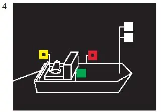 |
Das Fahrzeug muss diese Lichter auch dann führen, wenn ihm vorübergehend auf kurzer Strecke ein Vorspann vorausfährt; der Vorspann muss die Lichter führen, die das geschleppte Fahrzeug führen muss.
b) bei Tag:
einen gelben Zylinder, der oben und unten mit je einem schwarzen und je einem weißen Streifen – letztere an den äußeren Enden – eingefasst ist; der Zylinder muss auf dem Vorschiff senkrecht und so hoch gesetzt werden, dass er von allen Seiten sichtbar ist. | 4 | 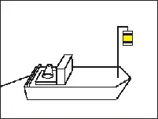 |
Das Fahrzeug muss den Zylinder auch dann führen, wenn ihm vorübergehend auf einer kurzen Strecke ein Vorspann vorausfährt; der Vorspann muss den Zylinder ebenfalls führen. |
2. Hat ein Schleppverband an der Spitze mehrere Fahrzeuge mit Maschinenantrieb, die nebeneinander fahren, sei es längsseits gekuppelt oder nicht, muss jedes dieser Fahrzeuge führen:
a) bei Nacht:
ein drittes Topplicht; dieses muss etwa 2,00 m unter dem ersten Topplicht, jedoch nach Möglichkeit mindestens 1,00 m höher als die Seitenlichter gesetzt werden; | 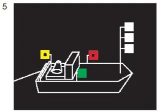 |
b) bei Tag:
den Zylinder nach Nummer 1 Buchstabe b. | 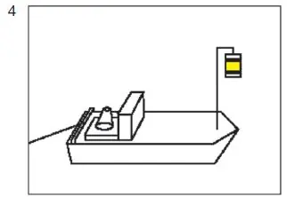 |
Das Gleiche gilt für alle Fahrzeuge mit Maschinenantrieb, die gemeinsam ein Fahrzeug, einen Schwimmkörper oder eine schwimmende Anlage bugsieren.
3. Die geschleppten Fahrzeuge eines Schleppverbandes in Fahrt müssen führen:
a) bei Nacht:
ein weißes helles, von allen Seiten sichtbares Licht; | 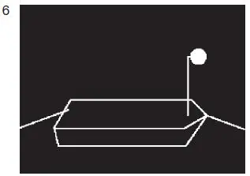 |
b) bei Tag:
einen gelben Ball an einer geeigneten Stelle und so hoch, dass er von allen Seiten sichtbar ist. | 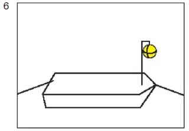 |
Das Gleiche gilt für geschleppte Schwimmkörper oder geschleppte schwimmende Anlagen. Wenn jedoch
a) eine Anhanglänge des Verbandes 110,00 m überschreitet, muss sie bei Nacht zwei Lichter nach Satz 1 führen, und zwar eines auf der vorderen und eines auf der hinteren Hälfte des Fahrzeugs; | 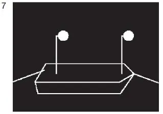 |
b) eine Anhanglänge des Verbandes aus mehr als zwei längsseits verbundenen Fahrzeugen besteht, sind die Lichter oder die Bälle nach Satz 1 nur von den beiden äußeren Fahrzeugen zu führen. | 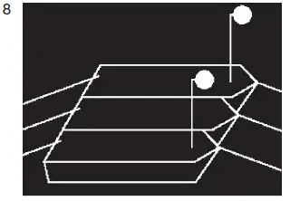 |
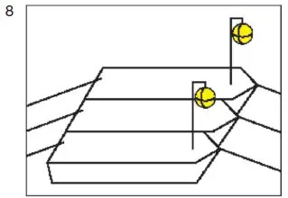 |
Die Lichter und Bälle aller geschleppten Fahrzeuge eines Verbandes sind so zu setzen, dass sie sich möglichst in gleicher Höhe über dem Wasserspiegel befinden.
4. Das Fahrzeug oder die Fahrzeuge, die die letzte Anhanglänge eines Schleppverbandes in Fahrt bilden, müssen bei Nacht führen:
a) das Licht nach Nummer 3 oder das Topplicht nach § 3.08 Nummer 1 Buchstabe a; | 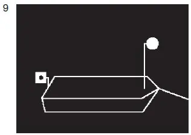 |
b) das Hecklicht nach § 3.08 Nummer 1 Buchstabe c; bilden mehr als zwei längsseits verbundene Fahrzeuge den Schluss des Verbandes, brauchen nur die beiden äußeren Fahrzeuge dieses Licht zu führen. | 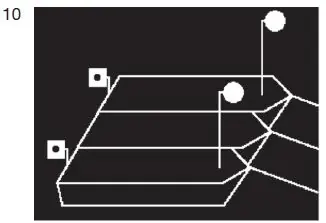 |
Bilden ein oder mehrere Kleinfahrzeuge den Schluss eines Verbandes, bleiben sie bei Anwendung der Vorschriften dieser Nummer unberücksichtigt.
5. Auf einer Reede braucht ein Schleppverband, der aus einem Fahrzeug mit Maschinenantrieb und einer einzigen Anhanglänge besteht, die Tagbezeichnung nach den Nummern 1 bis 4 nicht zu führen.
6. Die Nummern 1 bis 5 gelten nicht für ein Kleinfahrzeug, das ausschließlich Kleinfahrzeuge schleppt, und nicht für ein geschlepptes Kleinfahrzeug. Für derartige Kleinfahrzeuge gilt § 3.13 Nummer 2 und 3.